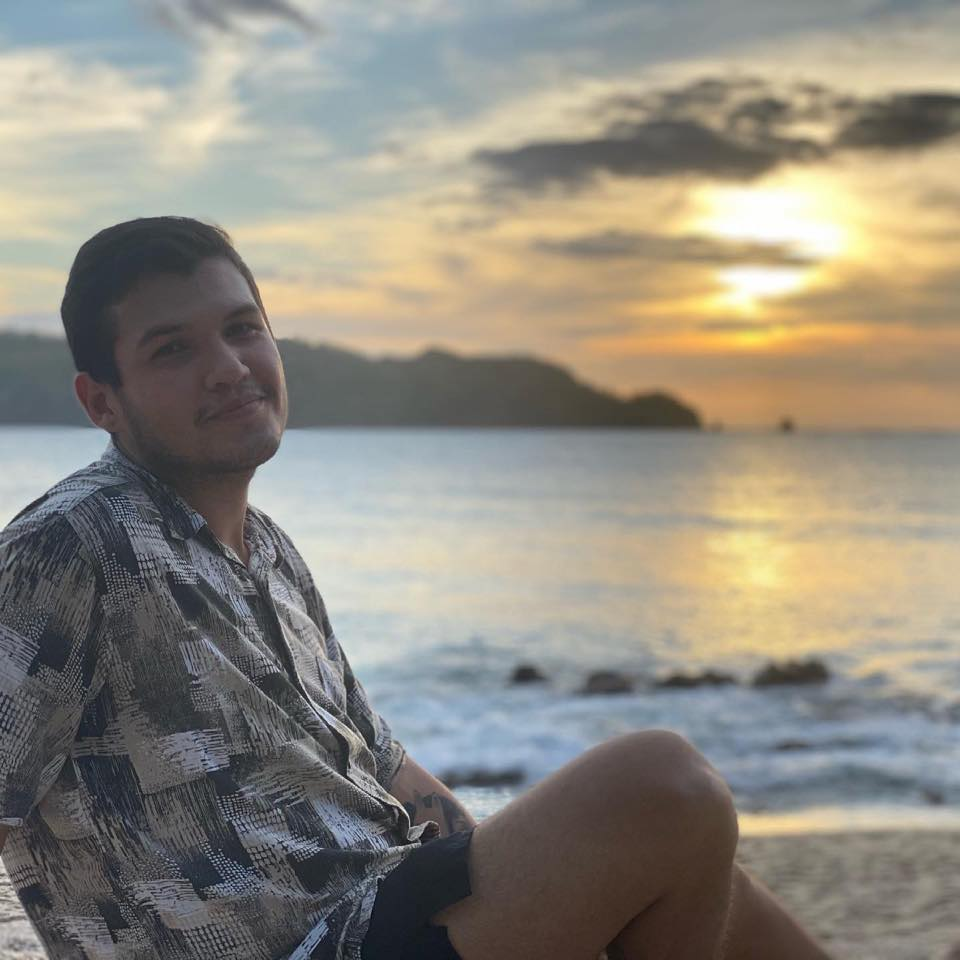

Johann Eduardo Hernández Alvarado

Sumary
Johann Eduardo Hernández Alvarado is a Costa Rican science teacher and Spanish as a foreign language instructor residing in Guadalupe, San José.
Currently teaching in Barcelona, Spain, he is pursuing a master's degree in Spanish teaching at Universidad Nebrija. With diverse experience
in high school education, academic writing tutoring, and cross-curricular projects, Johann is skilled in classroom management, curriculum development,
and effective communication. Fluent in Spanish and proficient in English, he can be contacted at johanha2012@gmail.com or (506) 8623-5444.
Education
- Bachelor deegree in Information systems engineering. - Universidad Latina de Costa Rica (2023 - Present) Costa Rica.
- Master's degree in Spanish teaching as a foreign language. - Universidad Nebrija ( 2021 - Present), Madrid, Spain.
- Major's degree in educational sciences with emphasis on science teaching. - Universidad Americana ( 2019 - 2021) Costa Rica.
- Bachelor's degree in educational sciences with emphasis on science teaching. - Universidad Católica de Costa Rica. (2016 - 2019) Costa Rica.
Experience
High School teacher - Centro Educativo Santa Catalina de Sena.
February 2023 - December 2023
- Lead engaging classroom discussions and facilitated interactive learning activities to promote student
engagement.
Spanish as foreign language teacher - Conexión Creando Puentes.
January 2022 - Present.
- Experience teaching Spanish as foreign language to diverse groups of students.
- Familiarity with various teaching methodologies, such as the communicative approach and task-based
learning.
- Ability to effectively assess students' progress and provide constructive feedback to enhance their
language skills.
Academic writing tutor - Universidad Nebrija.
October 2021 - Present.
- Developed and delivered workshops on writing fundamentals, including grammar, structure, and citation.
- Provided constructive feedback on written assignments, helping students improve their writing skills.
- Experience tutoring students in academic writing, providing support and guidance throughout the writing
process.
Biology teacher - Ministry of Public Education.
2018 - 2019 and 2021 - 2022
- Developed and delivered comprehensive lesson plans that catered to diverse learning needs and
abilities.
Science teacher - Saint George High School.
2020 - 2021
- Collaborated with colleagues to design and implement cross-curricular projects that integrated science
into other subjects.
Skills
- Science teaching.
- Spanish as foreign language teaching.
- Classroom management.
- lessons planning.
- curriculum development.
- Assessment and evaluation.
- communication skills.
Other
Contact me